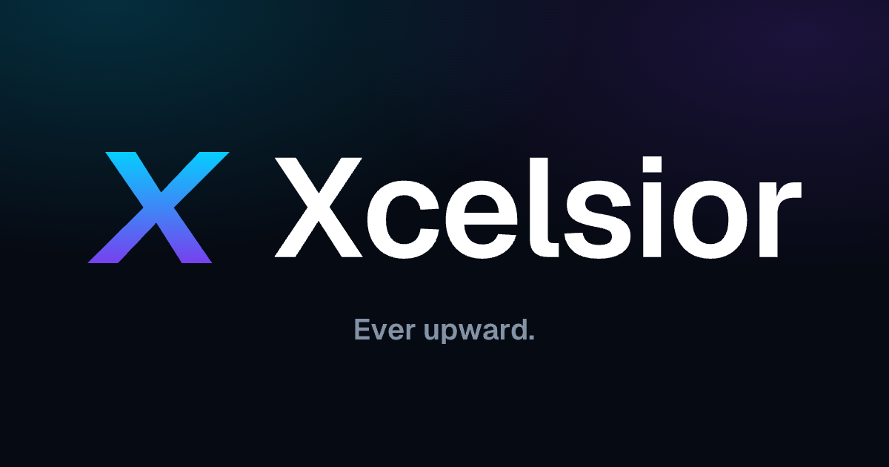
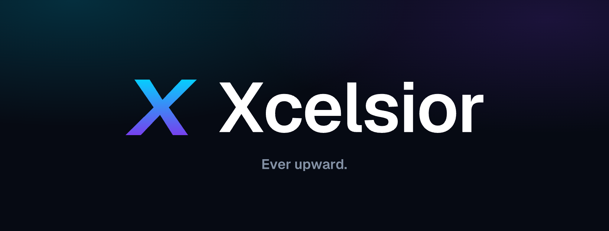
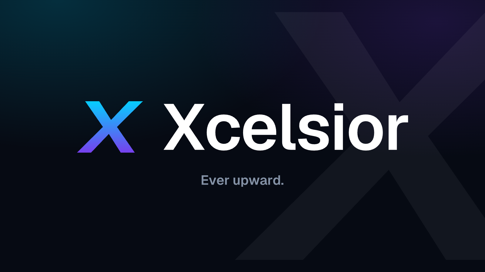

Brand Identity · Logo System

A sharper mark for the GPU cloud people actually choose.
A bold, leaning X — built for speed and forward motion. Electric cyan to violet on deep navy. No maple leaf, no clutter: just an ownable letterform that works from favicon to billboard.
01
The Mark
The 9° forward lean turns a plain X into momentum — a quiet nod to accelerate and ever upward.
Flat-cut terminals keep it crisp and engineered. The crossing forms a clean diamond — legible at any size.
02
Wordmark & Lockup

03
App Icons & Containers


04
Color & Type
Typeface — Geist
Xcelsior
Ever upward. Aa Bb Cc 0123
Wordmark · Geist SemiBold
UI / Body · Geist Regular–Medium
Code / Meta · Geist Mono
05
Social & App — Ready-to-post PNG

og-image · 1200×630 · link previews (Slack, iMessage, X, FB)↓ PNG

X / Twitter header · 1500×500↓ PNG

LinkedIn banner · 1584×396↓ PNG

Facebook cover · 1640×624↓ PNG

{kind=link}
{kind=link}
{kind=link}
{kind=link}
{kind=link}
{kind=link}
{kind=link}
{kind=link}
{kind=link}
{kind=link}
{kind=link}
{kind=link}
{kind=link}
{kind=link}
{kind=link}

X / feed post · 1600×900↓ PNG
{kind=link}
FAVICON / APP ICON

 16/32/48 · 180 (apple-touch) · 192 · 512 · maskable · gradient tile
16/32/48 · 180 (apple-touch) · 192 · 512 · maskable · gradient tile
+ transparent icon PNGs (gradient / white / navy)
+ transparent icon PNGs (gradient / white / navy)
15 SVG + 20 PNG · a complete kit
Vector logos & outlined wordmark · favicons, OG image, profile pics, covers & posts for every platform
/assets/icon-*.svg
/assets/wordmark-*.svg · /assets/lockup-*.svg
/assets/app-*.svg